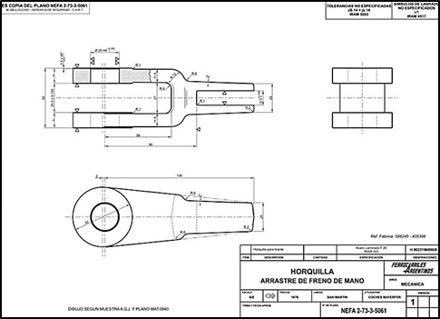
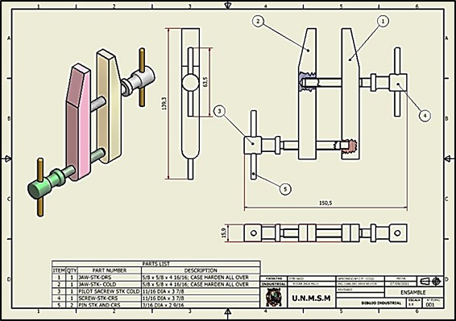
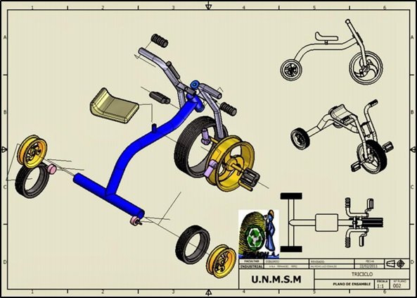

En el documento actual se detalla la actividad que se hizo en la semana 8. También se explicará sobre una herramienta útil al momento de mostrar las partes de un prototipo: Autodesk Inventor Professional 2019.
En esta semana, se continuó con el cuarto paso (Prototipar) del Design Thinking. Con el fin de mostrar y explicar de manera clara los componentes del prototipo desarrollado en el proyecto se realizó un diagrama modular.
Un diagrama modular es una herramienta gráfica que permite representar los componentes (módulos) de un sistema desde diferentes ángulos de vista. Un diagrama modular contiene instrucciones y datos para poder guardar la información o transmitirla a alguien de manera estandarizada. (1) Se realiza un diagrama modular con el fin de tener claro la estructura final de un prototipo, así como también para representar las conexiones entre los diferentes módulos. Existen diferentes herramientas que ayudan en la elaboración de un diagrama modular, en el proyecto actual se utilizó la herramienta llamada: Autodesk Inventor Professional 2019.
El software CAD Inventor® proporciona herramientas de calidad profesional para diseño mecánico 3D, documentación y simulación de productos. Trabaja de manera eficiente con una combinación potente de capacidades de diseño paramétrico, directo, de formas libres y basado en reglas. (2) En el desarrollo de un diagrama modular Autodesk Inventor Professional nos permite describir un prototipo de diferentes tipos de vista entre las cuales están: (1) • Despiece o Fabricación: Se muestran las dimensiones de la pieza a fabricar de acuerdo al método (fundido, torneado, etc.)
• Ensamble: Brinda una visión general del dispositivo, la relación entre las diferentes piezas y dimensiones máximas. Además, se pueden tener vistas de apoyo.
• Explosiva: Las piezas están en vista de perspectiva y tiene como finalidad indicar de forma ordenada y precisa la secuencia de ubicación de las piezas.
Para elaborar un diagrama modular se debe seguir los siguientes pasos: (Adaptado de: (3)) 1. Inicie el programa Autodesk Inventor Professional 2019 y seleccione como plantilla de trabajo en el sistema ingles ANSI (pul).idw, para iniciar las operaciones de acotaciones y vistas. 2. Seleccione de su panel DRAWING VIEWS (vistas de dibujo) el comando BASE VIEW (vista base). 3. Un cuadro de dialogo surgirá en la pantalla, en el cual se le pedirá que busque su archivo de la pieza dibujada, para ello seleccione la pestaña FILE (archivo) y localice su diseño. 4. Una vez que se ha seleccionado el archivo, debe indicarse la SCALE (escala) de forma que las vistas del dibujo queden espaciadas de una forma ordenada y correcta. Así mismo se puede agregar una LABEL (etiqueta) que identifique que vista es y la escala que se está usando. Una vez escogida la escala, las vistas auxiliares que surjan a partir de la vista base manejaran la misma escala. 5. En el cuadro orientación, puede escoger como vista base cualquier proyección de su diseño, tal como vista superior, lateral derecha o izquierda, frontal o trasera, e incluso puede colocar como vista base los isométricos de su diseño. 6. Coloque sobre su plano la vista de su diseño para generar la vista base. 7. Coloque el puntero sobre la vista base de modo que surja un recuadro alrededor de ella. 8. Abra el menú auxiliar del ratón y seleccione CREATE VIEW (crear vista) y seleccione PROJECTED (proyectada). Cree todas las vistas necesarias de su pieza de modo que quede representado cado aspecto de su diseño. 9. Para modificar el cuadro de datos diríjase al panel MODEL (modelo) y seleccione ANSI LARGE y despliegue el menú de forma que tenga acceso a FIELD TEXT (campo de texto). 10. Seleccione FIELD TEXT y un recuadro aparecerá en su pantalla en el cual el usuario será capaz de modificar toda el área del cuadro de datos y colocar sus datos personales. Seleccione el pequeño block que se encuentra en la esquina superior derecha llamado I-PROPERTIES. 11. Diríjase a SUMMARY y cambie los valores requeridos.
1. Gonzales M. Diseño con Software CAD [apuntes]. Diseño Industrial .Pontifica Universidad Católica del Perú. Estudio Generales Ciencias. Ingeniería Biomédica. 2018. [inédito] 2. Inventor | Software de diseño mecánico y CAD 3D | Autodesk [Internet]. [Cited 2019 Oct 24]. Available from: https://latinoamerica.autodesk.com/products/inventor/overview 3. Javier I, Sánchez R, Felipe MI, Rodríguez C. Manual De Inventor V. 10. 2009.